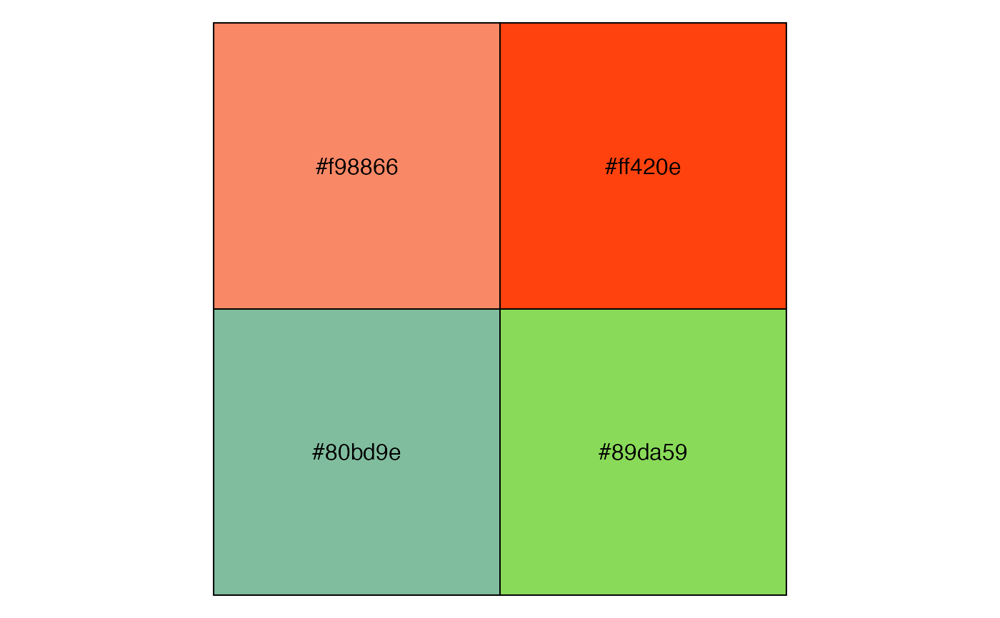
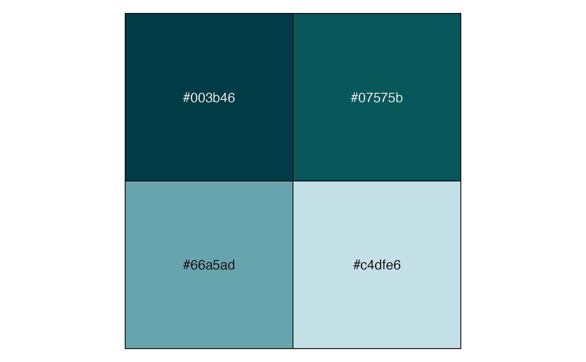

150 four-color palettes by the canva.com design school. These palettes were derived from photos and "impactful websites".
canva_palettes
Format
A named list of character vector.
The names are the palette names. The values of the character vectors
are hex colors, e.g. "#f98866".
Source
http://makeadifferencewithdata.com/wp-content/uploads/2016/12/color-palettes.txt
References
Janie Kliever, 100 Brilliant Color Combinations and How to Apply Them to Your Designs, Canva.com, June 20, 2015.
Mary Stribley, Website Color Schemes: The Palettes of 50 Visually Impactful Websites to Inspire You, Canva.com, January 26, 2016.
Pablo Saenz de Tejeda, 150 paletas de colores para Tableau, January 1, 2017.
Schwabish, Jonathan. 150+ Color Palettes for Excel, PolicyViz, January 12, 2017.
Examples
require("ggplot2") require("tibble") if (require("purrr") && require("scales") && require("dplyr")) { canva_df <- map2_df( canva_palettes, names(canva_palettes), ~ tibble( colors = .x, .id = seq_along(colors), palette = .y ) ) ggplot(canva_df, aes( y = palette, x = .id, fill = colors )) + geom_raster() + scale_fill_identity(guide = FALSE) + theme_minimal() + theme(panel.grid = element_blank(), axis.text.x = element_blank()) + labs(x = "", y = "") show_col(canva_pal("Fresh and bright")(4)) show_col(canva_pal("Cool blues")(4)) show_col(canva_pal("Modern and crisp")(4)) }